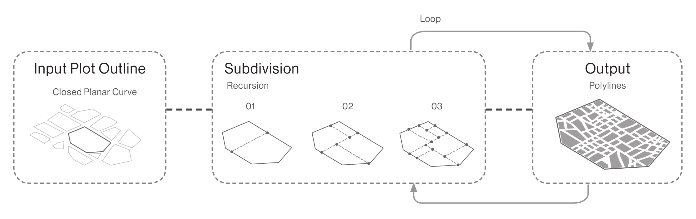

PROCEDURAL GENERATION · SPATIAL ALGORITHMS · URBAN SYSTEMS
Procedural generation of urban grids from parametric rules
A Python-based Grasshopper toolset for generating urban grids through parametric rules. The system translates geometric and spatial constraints into configurable street and block patterns, allowing different urban configurations to be generated and explored systematically.
